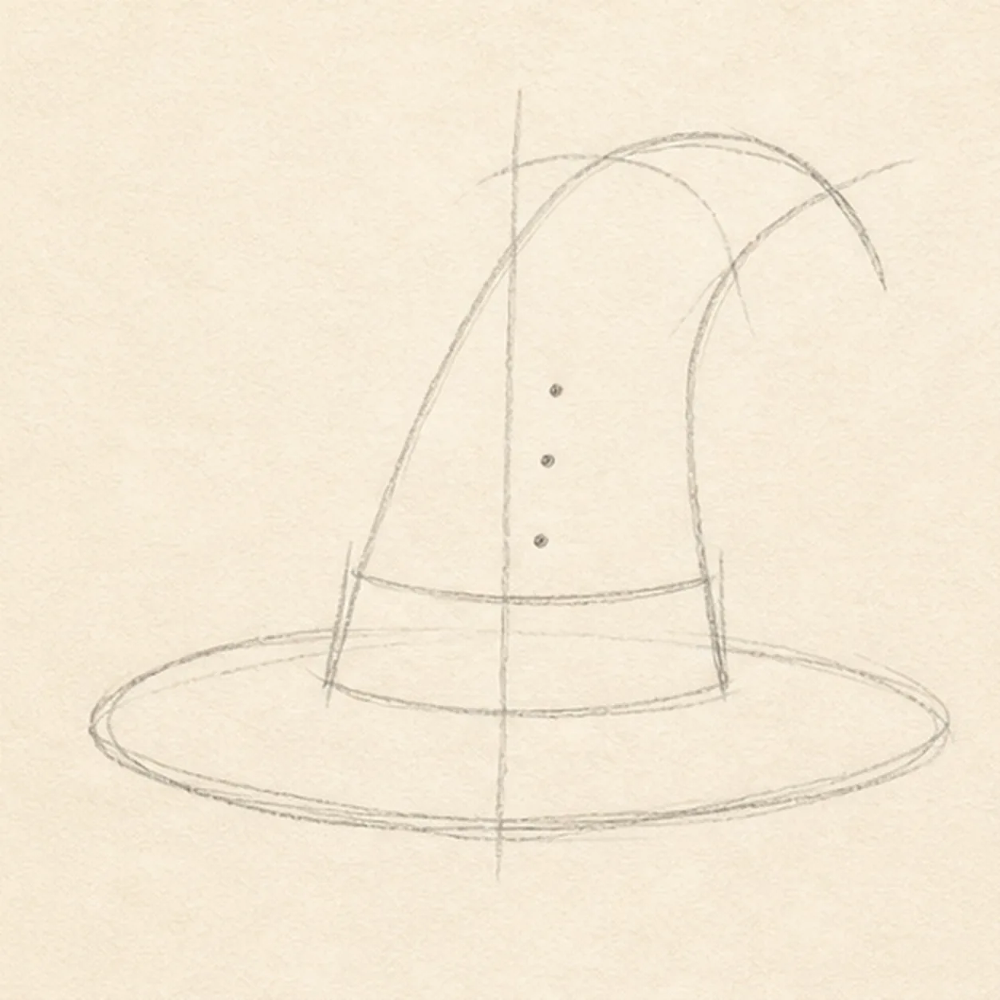
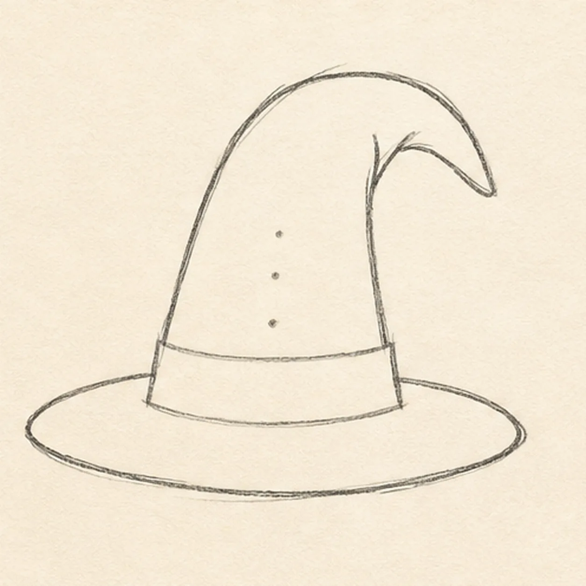
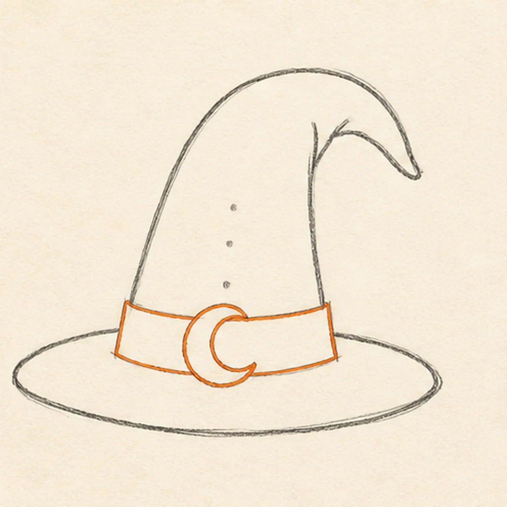
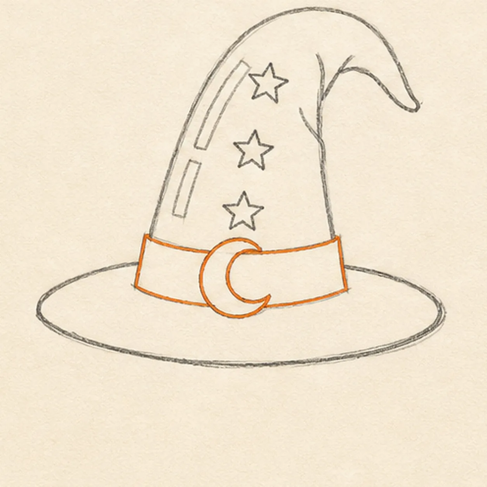
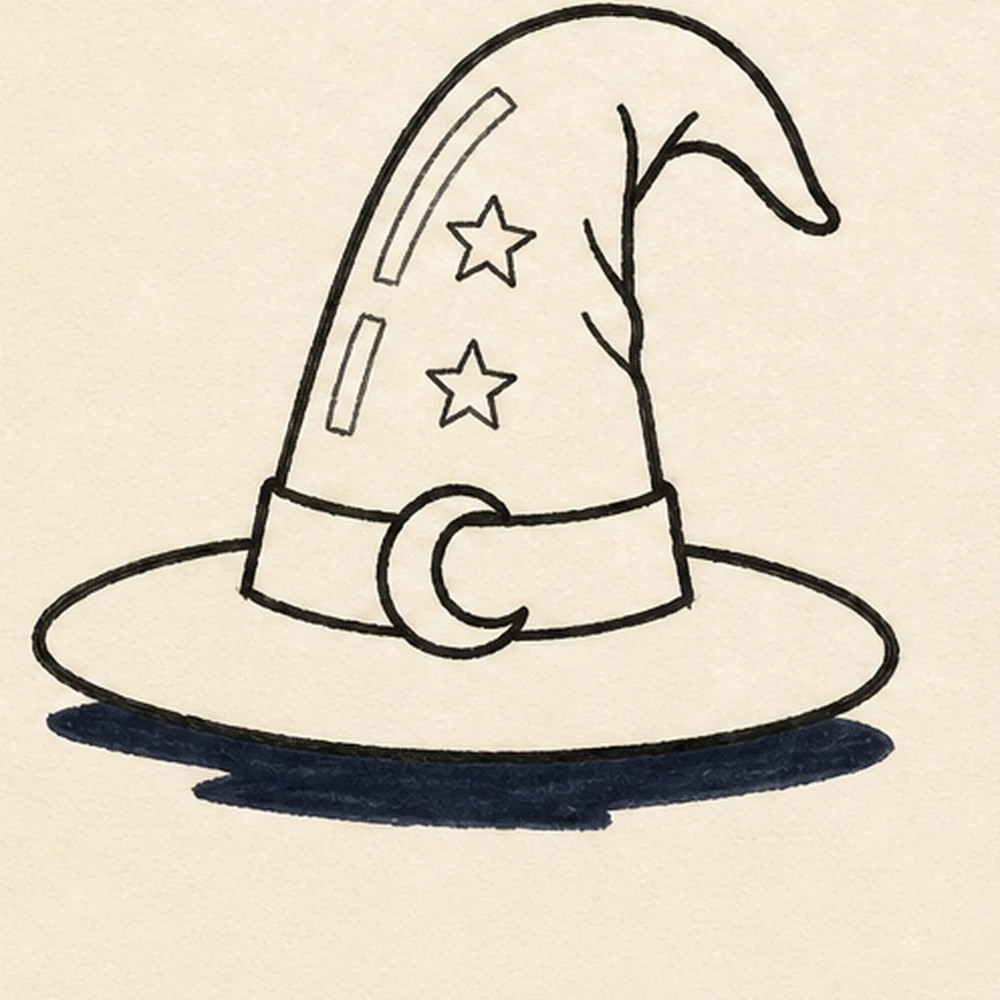

Felt-tip marker mode
Let's draw a cartoon wizard hat with stars
Treat this as one playful practice round: sketch the idea loosely, simplify the shapes, then commit with confident marker outlines and bright fills.
-
01

Map the brim and bend
Use pale pencil for one wide brim ellipse, one tall centerline, one bent cone gesture, the full band and crescent-buckle footprint, exactly three star centers, two shine reserves, and a flat broken shadow footprint.
Marker tip: Ghost the cone sweep twice before drawing. This first frame should look like construction, not a pale finished hat.
-
02

Shape the floppy hat
Connect the brim and cone guides into one tall wizard-hat silhouette with a tip that bends right, while keeping the band, buckle, star, shine, and shadow reserves open.
Marker tip: Use the centerline to keep the cone leaning without becoming lopsided. Pull each brim edge in one steady ellipse rather than tracing it repeatedly.
-
03

Add the magic band
Draw one band across the lower cone and one crescent-moon buckle on the established footprint.
Marker tip: Keep both band edges parallel as they cross the curve. Leave the buckle open inside for now so its yellow fill stays clean later.
-
04

Place the three stars
Turn the three centers into exactly three five-point stars, then add the two shine gaps and a few short cone-fold lines.
Marker tip: Draw each star as a tiny zigzag around its center dot, not as a circle with points. Keep the three stars separated and do not add a fourth sparkle.
-
05

Ink the spellbound shapes
Trace only the established hat, band, buckle, three stars, shine marks, fold lines, and flat broken shadow with thick, slightly wobbly black felt-tip.
Marker tip: Ink the buckle and stars first, then rotate the page for the long cone curves. Make the outer hat silhouette heavier than the small fold lines.
-
06

Make the magic pop
Fill the established hat purple, band orange, buckle and three stars yellow, shine marks teal, and shadow deep navy; clarify only the same black contours and paper gaps.
Marker tip: Pull marker strokes along the cone and brim curves, not straight across them. Count one hat, one band, one buckle, three stars, two shines, and one shadow before stopping. Try a different color spell in your version if you like, but keep the bold handmade grain.
![Handmade felt-tip marker drawing of one face-free upright cartoon hourglass with exactly two rounded teal caps, exactly two attached coral side pillars, one pale-aqua pinched glass vessel, one curved upper golden-yellow sand bed, one centered falling sand stream, one rounded lower sand pile, exactly two open-paper glass highlights, exactly three yellow four-point sparkles, exactly four deep-navy cap notches, thick imperfect black outlines, visible directional marker texture, and one broken deep-navy ground shadow](../assets/cartoon-hourglass-with-flowing-sand-finished-v1.webp)
![Handmade felt-tip marker drawing of one face-free upright teal cartoon walkie-talkie leaning slightly right with one top-left antenna, exactly two coral top knobs, one attached coral push-to-talk button on the upper-left side, one blank pale-aqua rounded screen with a dark bezel, exactly five horizontal deep-navy speaker slots, exactly two yellow radio-wave arcs above the antenna, exactly two open-paper case highlights, exactly four lower grip ribs arranged two per side, thick imperfect black outlines, visible directional marker texture, and one broken deep-navy ground shadow](../assets/cartoon-walkie-talkie-finished-v1.webp)